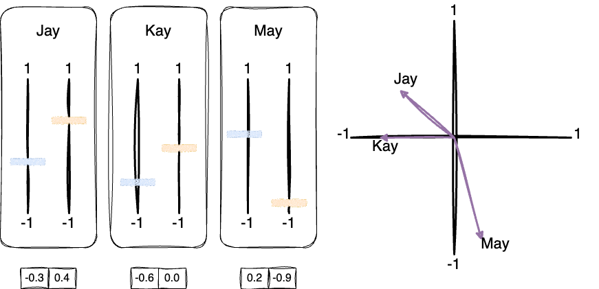
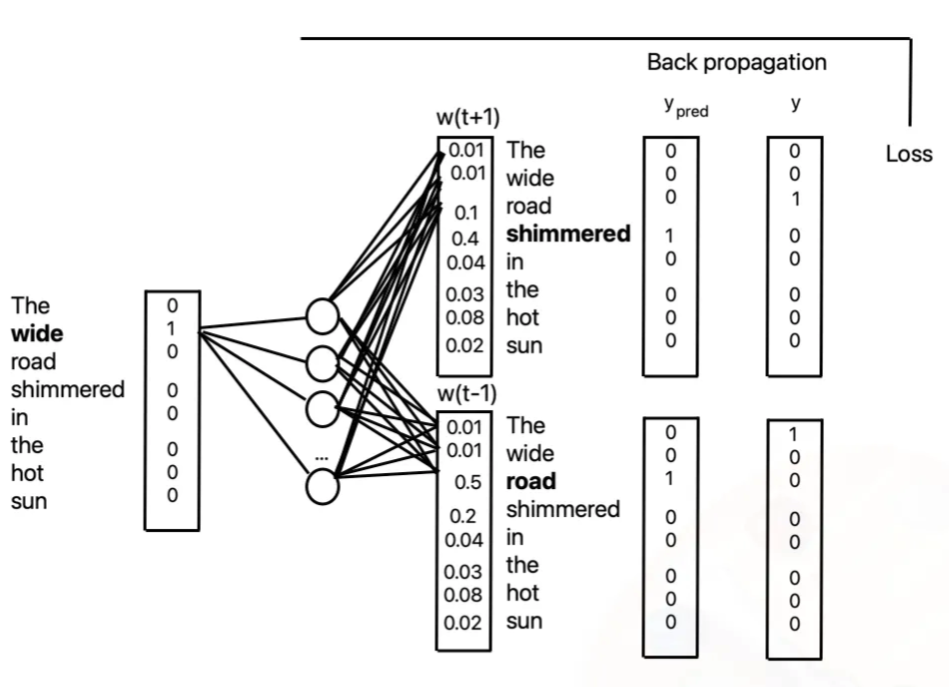
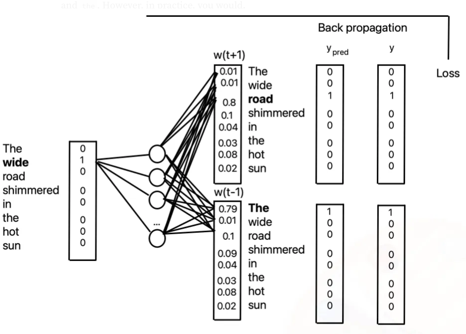

Language for computers
Word embeddings as a basis for large language models
Tuesday, November 12, 2024
Background
Text is one of the most abundant forms of data in healthcare, with sources ranging from electronic health records (EHRs) to published research articles, clinical notes, and even patient-reported outcomes. However, computers don’t understand words as humans do—they require numerical representations of text to analyze, model, and make predictions.
The Challenge
How do we represent the meaning of words in a way that captures their context and relationships in a way that machines can understand?
Enter Word Embeddings
Importance of Word Embeddings
Word embeddings provide a way to represent words as vectors (numerical arrays), capturing semantic relationships and making it possible to apply machine learning models to text. By converting text into embeddings, we open the door to a range of applications, from clinical text mining to predicting patient outcomes based on unstructured medical notes.
Embedding People: Analogies in Personality Dimensions
Start with a low-dimensional example: personality traits.
- honesty-humility (H)
- emotionality (E)
- extraversion (X)
- agreeableness (A)
- conscientiousness (C)
- and openness to experience (O)
Each factor is composed of traits with characteristics indicating high and low levels of the factor (see Lee and Ashton (2013)).
Embedding People: Analogies in Personality Dimensions
Schematic of three hypothetical embeddings of three people, Jay, Kay, and May. Our embeddings are based on personality “dimensions” represented by two different scores (colored orange and blue).
Embedding People: Analogies in Personality Dimensions
- The idea of “embedding people” allows us to take abstract concepts like personality traits and represent them in a numerical space.
- This concept is extended to words in natural language processing, where we represent words as vectors in a high-dimensional space.
- Just like with Jay, Kay, and May, words that are similar in meaning are close together in the word embedding space.
Word embeddings capture the meaning and relationships between words, allowing us to perform tasks like sentiment analysis, machine translation, named entity recognition, and form the basis for large language models…
Word embeddings capture the meaning and relationships between words, allowing us to perform tasks like sentiment analysis, machine translation, named entity recognition, and form the basis for large language models…
and form the basis for large language models.
Word Embeddings
Previons approaches: Bag-of-Words and TF-IDF
Bag-of-words ignores the order of words and represents text based on word occurrences. For example, a clinical note with the text: “Patient experiences chest pain” would be represented simply as
["patient", "experiences", "chest", "pain"]. The model doesn’t understand that “chest” and “pain” are related, or that their combination is meaningful.TF-IDF refines this by weighing how frequently words appear in a document relative to how common they are across all documents. This addresses the fact that some words are very frequent and not informative, like “the” or “patient.”
Limitations with BoW and TF-IDF
- Lack of Context: These methods do not capture word order or semantics. For example, in BoW, the words “chest pain” and “pain in the chest” would be represented the same.
- High Dimensionality: BoW and TF-IDF result in large sparse matrices, making it difficult to work with longer documents.
- No Concept of Similarity: In these models, words like “doctor” and “physician” are treated as completely independent, despite their similar meanings.
This leads us to modern word embeddings, which solve many of these issues.
Word Embeddings: A definition
Word embeddings are dense, low-dimensional vector representations of words, where words with similar meanings have similar vector representations. The key idea is that these embeddings capture both the syntactic and semantic properties of words. The most popular models for learning embeddings include Word2Vec (Mikolov et al. 2013), GloVe (Pennington, Socher, and Manning 2014), and fastText (Bojanowski et al. 2017).
In the left section of the figure, you see word embeddings for seven different words: “dog,” “puppy,” “cat,” “houses,” “man,” “woman,” “king,” and “queen.” Each word is represented as a vector in a seven-dimensional space (d1 to d7), where each number in the row corresponds to a particular dimension in this space.
- “dog” is represented as the vector [0.6, 0.9, 0.1, 0.4, -0.7, -0.3, -0.2]
- “cat” is represented as [0.7, -0.1, 0.4, 0.3, -0.4, -0.1, -0.3]
These vectors encode the meaning of the words, capturing their relationships to other words in the vocabulary based on the corpus they were trained on.
- Linear combinations of dimensions in vector space correlate with the meaning of the words.
- Dimension d1 in this figure has a high positive correlation with living beings.
- A properly tuned word embedding model will map words with similar semantic or syntactic roles to adjacent regions in vector space.
- Cultural concepts such as gender, represented by the dotted vector (bottom right).
- Which dimension shows a strong correlation with masculinity-femininity?
- And what about royalty-commoner?
- How about dog-cat?
- Given the answer to the above, what might be an approximate value of the dog-cat dimension for kitten?
King-Queen Analogy

Figure 1: GloVE embeddings are the inputs to this 2D plot. The words/points are placed based on their location along the queen–woman or royalty axis and the he–she or gender axis in the GloVE space.
Word Embeddings: The King-Queen Analogy
An amazing property of word embeddings is that they can capture analogies like “King is to Queen” as “Man is to woman.” This is known as the king-queen analogy and is a classic example of how embeddings can encode relationships between words. To use embeddings to solve this analogy, we can perform vector arithmetic. In this case, the vector operation we could use is given in Equation 1.
\[\text{vector("king")} - \text{vector("man")} + \text{vector("woman")} \approx \text{vector("queen")} \qquad(1)\]
Worked examples
The model object is now a word embedding model that you can use to get word vectors and find similar words. Someone else has trained the model already.
Worked examples
Here are a few things you can do with the model:
# Get the word embedding vector for a word
word = "king"
vector = model[word]
print(f"Word embedding for '{word}': {vector}")Word embedding for 'king': [ 0.50451 0.68607 -0.59517 -0.022801 0.60046 -0.13498 -0.08813
0.47377 -0.61798 -0.31012 -0.076666 1.493 -0.034189 -0.98173
0.68229 0.81722 -0.51874 -0.31503 -0.55809 0.66421 0.1961
-0.13495 -0.11476 -0.30344 0.41177 -2.223 -1.0756 -1.0783
-0.34354 0.33505 1.9927 -0.04234 -0.64319 0.71125 0.49159
0.16754 0.34344 -0.25663 -0.8523 0.1661 0.40102 1.1685
-1.0137 -0.21585 -0.15155 0.78321 -0.91241 -1.6106 -0.64426
-0.51042 ]The vector variable now contains the word embedding for the word “king.” You can use this to find similar words or perform vector arithmetic. Here’s an example:
Worked examples
# Find similar words
similar_words = model.most_similar(word, topn=5)
# Display similar words and their similarity scores
print(f"Words similar to '{word}':")
for similar_word, score in similar_words:
print(f" {similar_word}: {score}")Words similar to 'king':
prince: 0.8236179351806641
queen: 0.7839044332504272
ii: 0.7746230363845825
emperor: 0.7736247777938843
son: 0.766719400882721Worked examples
You can also perform vector arithmetic to find relationships between words. Coming back to our earlier example of the king-queen analogy, you can use the word embeddings to find the word that completes the analogy “Man is to king as woman is to ___.”
Worked examples
“Dog is to puppy as cat is to ___.”
Worked examples
“France is to Paris as Italy is to ___.”
Where Do Word Embeddings Come From?
Word embeddings are learned from large text corpora using models like Word2Vec, GloVe, or fastText. These models are trained to predict words based on their context in the text, capturing the relationships between words in the process.
The word2vec model, developed by Mikolov et al., is one of the most popular methods for learning word embeddings.
Word2Vec: Skip-Gram Model

Training the Skip-Gram Model
Model incorrectly predicts neighboring words.
The trained model predicts the correct neighboring words.
Model has “learned” new weights and now correctly predicts neighboring words.
Concepts applied in Healthcare
In medical contexts, word embeddings can capture similar nuances. For example:
- Medical Conditions: Words like “diabetes” and “insulin” might cluster closely together because they frequently co-occur in medical texts.
- Drug-Condition Relationships: Embeddings might place medications and their corresponding conditions near each other, such as “metformin” and “diabetes.”
- Semantic Analogies: Embeddings could capture analogies such as “insulin is to diabetes as chemotherapy is to cancer.”
Visualizing embeddings in medical text could help identify clinically relevant clusters, group patients with similar conditions, or even highlight previously unknown associations between treatments and conditions.
Why Word Embeddings Are Powerful for Medical Text
The power of word embeddings lies in their ability to capture both semantic similarity and relationships between terms. Some key benefits include:
- Contextual Relationships: Embeddings capture the relationships between words based on the context they appear in. For instance, embeddings might learn that “heart attack” is more related to “chest pain” than to “headache.”
- Transfer Learning: Once embeddings are trained on a large dataset, they can be transferred to other tasks. This is particularly useful in medicine, where labeled datasets are often scarce.
- Reduced Dimensionality: Instead of having thousands of word features (as in BoW or TF-IDF), word embeddings map words into a continuous vector space of, say, 300 dimensions, significantly reducing computational complexity.
Challenges and Considerations
While word embeddings are powerful, they are not without limitations, particularly in the medical context.
- Data Quality: Embeddings reflect the biases of the text they are trained on. Incomplete or biased data (e.g., underrepresentation of minority groups in medical datasets) may lead to biased embeddings.
- Out-of-Vocabulary Words: Traditional embeddings struggle with out-of-vocabulary (OOV) words, such as rare medical terms or abbreviations not present in the training data. This is addressed by newer models like fastText, which breaks words into subword units.
- Interpretability: The embedding space is often not human-interpretable. We can visualize relationships between terms, but it is difficult to explain why certain words cluster together beyond their proximity in the vector space.
Conclusion
Word embeddings revolutionized how text is represented in machine learning models, particularly in complex domains like healthcare. By capturing both syntactic and semantic relationships between words, embeddings allow for more effective processing of clinical texts, patient records, and biomedical literature.
Relationship to Large Language Models
Large Language Models
Large language models (LLMs) like GPT-3, BERT, and T5 have transformed natural language processing (NLP) by leveraging the power of word embeddings. These models are trained on massive text corpora and can generate human-like text, answer questions, and perform a range of NLP tasks.
Word Embeddings in LLMs
Word embedding concept form the foundation of LLMs, providing a way to represent words in a continuous vector space. LLMs use these embeddings as input to their deep learning architectures, allowing them to understand and generate text.
LLMs are machine learning models that take words as input and then, iteratively and probabilistically, generate the next word in a sequence.
The same principles that apply to word embeddings—capturing context, relationships, and meaning—also apply to LLMs, albeit at a much larger scale.
Exercises
TensorFlow Embedding Projector
The TensorFlow Embedding Projector is a web-based tool that allows you to visualize word embeddings in a 3D space. You can use it to explore the relationships between words and see how they are clustered together. Navigate to the TensorFlow Embedding Projector and experiment a bit.
By mousing over the points in the 3D space, you can see the words that are closest to a given word. You can also search for a specific word and see how it is related to other words in the space. If you click on a word, you can see a list of the words that are closest to it (based on cosine similarity in the embedding space, not necessarily in the 2D projection).
Word Embedding Visualization
In this exercise, you can play with a really cool interactive word embedding visualization tool. The tool allows you to explore word embeddings in a 2D space and see how words are related to each other.
First, watch the video below to see how the tool works:
- Navigate to the word2viz website.
- Explore the controls and inputs on the right.
- PLAY!
[Optional] Playing with Word Embeddings in Python
For those who want to try this themselves, I’ve created a Google Colab notebook that you can use to experiment with word embeddings in Python.
You can watch this short video to see how to use the notebook: